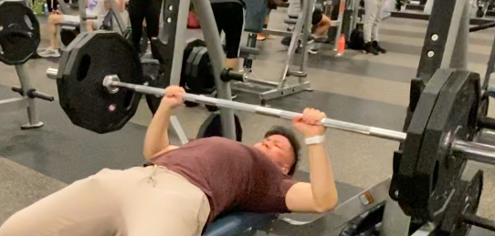

|  |
Weightlifting has been a hobby of mine ever since 2012. Being able to go to the gym to relieve stress is one of the things I highly recommend that people do. Weightlifting is important to me because I can compare it to something like Web Development. You're probably wondering, how does this correlate to Web Development? To me, these two subjects are similar in their own different ways but they are the same in my opinion. When developing with HTML, CSS, JavaScript, you see all of your efforts come alive step by step. Obviously, the backend part is something that you don't see until you have finished all of the functional parts. I can say the same about weightlifting. At the gym, you'll probably look pumped and see all of your efforts show. What good is all of that frontend if you do not focus on the backend aspects? People see that you go to the gym and put in work, but what happens when you go home when nobody is watching? I would compare this to the backend part. The backend portion is supposed to make your project come alive. I can say the same about going home and taking care of your diet which relates to backend. If you want to progress, you have to focus on the important aspects outside of the gym itself. Weightlifting to me has been able to relieve a lot of stress for me. It forces me to leave the house and improve on the qualities that I have set for myself.